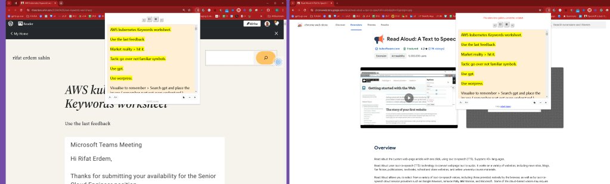
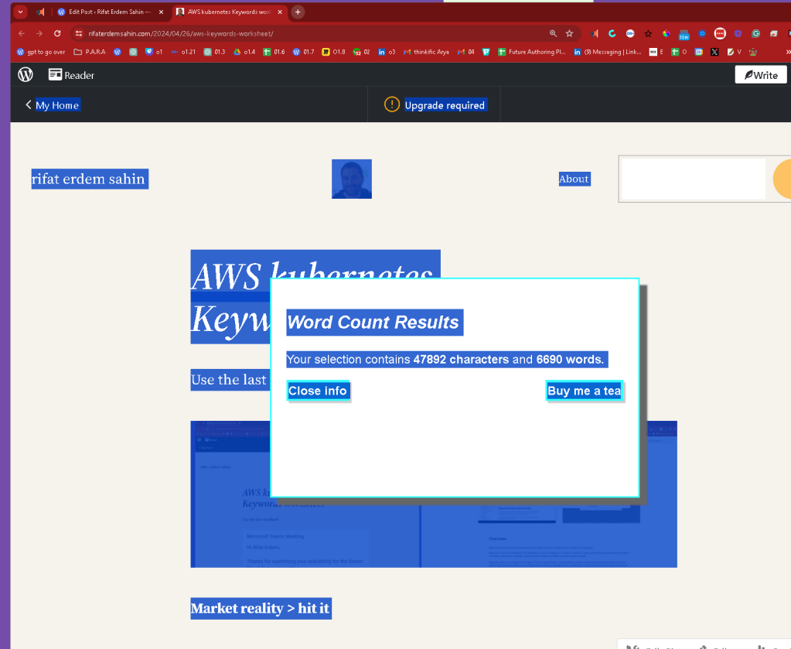

AWS kubernetes Keywords worksheet
Use the last feedback

Market reality > hit it
Tactic go over not familiar symbols
Use gpt
Use worpress
Visualise to remember > Search gpt and place the image ( remember part not even understand )
AWS IoT (Amazon Web Services Internet of Things) is a suite of services offered by Amazon that enables developers to connect, manage, and secure Internet of Things (IoT) devices. It provides the cloud infrastructure necessary to support IoT applications across a wide range of industries, including manufacturing, healthcare, smart homes, automotive, and more. Here’s a brief overview of the core components and functionalities:
-
AWS IoT Core: Allows IoT devices to easily and securely interact with cloud applications and other devices. It supports billions of devices and trillions of messages, and can process and route those messages to AWS endpoints and to other devices reliably and securely.
-
AWS IoT Analytics: Provides advanced data analysis for IoT devices. This service helps users gather, process, analyze, and visualize IoT data to make better-informed decisions.
-
AWS IoT Device Management: Enables users to onboard, organize, monitor, and remotely manage IoT devices at scale throughout their lifecycle.
-
AWS IoT Greengrass: Extends AWS functionalities to edge devices, enabling them to act locally on the data they generate, while still using the cloud for management, analytics, and durable storage.
-
AWS IoT Events: A fully managed service that makes it easy to detect and respond to events from IoT sensors and applications, offering real-time notifications.
-
AWS IoT SiteWise: Monitors operations with data collected from industrial facility devices, and uses this data to provide insights that help improve production efficiency.
-
AWS IoT Things Graph: A service that simplifies the development of IoT applications by providing a visual workflow editor to connect different devices and web services so they can work together.
AWS IoT provides a powerful toolkit for building IoT solutions that can gather, send, and process data, allowing businesses to innovate, improve efficiencies, and reduce costs.
my on premises gateway in azure is aws outpost
AWS Outposts is a fully managed service from Amazon Web Services that extends AWS infrastructure, services, APIs, and tools to virtually any data center, co-location space, or on-premises facility for a truly consistent hybrid experience. AWS Outposts is designed for situations where customers need to keep their data and applications close due to low latency or local data processing requirements. Here are the key aspects of AWS Outposts:
-
Hybrid Cloud Setup: It enables a seamless integration between on-premises environments and the AWS cloud, allowing organizations to use the same AWS infrastructure, services, APIs, and tools both on-premises and in the cloud. This integration simplifies the development and management of hybrid applications.
-
Fully Managed Service: AWS manages and maintains the Outposts hardware and software, reducing the burden on IT staff. When updates are required, AWS automatically delivers them to Outposts, similar to how they update and manage services in their data centers.
-
Consistent Performance: By providing AWS services on-premises, Outposts ensure that applications have a consistent set of features and performance, regardless of where they are deployed. This is particularly important for applications that require low latency, such as those in manufacturing, multimedia, health care, and financial services.
-
Range of Configurations: Outposts can be configured with a variety of EC2 instances and other AWS services, such as Amazon Elastic Block Store (EBS), Amazon Relational Database Service (RDS), and Amazon Elastic Container Service (ECS). This flexibility allows organizations to tailor their on-premises AWS environment to their specific needs.
-
Networking: Outposts is integrated with the AWS network, and setting up connectivity is part of the installation process. This connectivity ensures that customers can manage their resources on Outposts and in AWS using the same AWS Management Console, APIs, and CLI tools.
-
Local Data Processing: Outposts is ideal for workloads that need to remain on-premises due to low latency or local data processing needs, providing a bridge between local data processing and storage and broader cloud capabilities.
AWS Outposts effectively brings the robust capabilities of AWS into the on-premises environment, offering a blend of cloud agility and security with the necessity for local data processing and storage, making it an attractive solution for many enterprises facing regulatory, latency, or data sovereignty challenges.
AWS Direct Connect is a networking service provided by Amazon Web Services (AWS) that allows you to establish a dedicated network connection from your premises to AWS. This service can help you reduce network costs, increase bandwidth throughput, and provide a more consistent network experience compared to internet-based connections. Here's a breakdown of how AWS Direct Connect works and its key benefits:
How It Works
AWS Direct Connect lets you create a private connection between AWS and your datacenter, office, or colocation environment. This is achieved through a Direct Connect location, which is a network node that can connect to your network. To use AWS Direct Connect, you typically work with AWS partners to set up a dedicated line from your premises to one of these Direct Connect locations. Here are the steps usually involved:
-
Request the Connection: You start by ordering a port on an AWS Direct Connect router. This is done through the AWS Management Console.
-
Connect to a Direct Connect Location: You extend your existing network to an AWS Direct Connect location using a standard 1 Gbps or 10 Gbps Ethernet fiber-optic cable. For greater capacity, you can provision multiple connections.
-
Create a Virtual Interface: Once the physical connection is in place, you can create virtual interfaces to begin routing traffic to and from AWS services.
-
Link to Your AWS Environment: The connection can be configured to access public resources (like S3) over the public AWS network or private resources like Amazon Virtual Private Cloud (VPC) using private IPs.
Key Benefits
-
Reduced Bandwidth Costs: By bypassing internet service providers, Direct Connect can reduce network costs, especially if you transfer large amounts of data between AWS and your data center.
-
Consistent Network Performance: Direct Connect provides a consistent and predictable network experience with less jitter and lower latency compared to regular internet-based connections.
-
Increased Bandwidth Throughput: The dedicated nature of Direct Connect means you can achieve higher data transfer rates, making it ideal for high throughput applications.
-
Enhanced Security: Using a dedicated connection enhances security as your data does not traverse the public internet.
Use Cases
-
Data Migration: Facilitates large-scale data migrations by providing a high-speed, secure connection to AWS.
-
Hybrid Environments: Ideal for hybrid cloud environments that require regular data transfer between on-premises infrastructure and AWS.
-
Real-time Data Processing: Useful for applications that require real-time data processing and low-latency access to AWS resources.
AWS Direct Connect is particularly beneficial for enterprises that have high performance and security requirements, providing them with a robust alternative to public internet connections for accessing cloud resources.
Azure > to understand!
Enterprise Migration to the Cloud: Enterprises moving large amounts of data to Azure can benefit from the high-speed and private nature of ExpressRoute.
Amazon Kinesis and Azure Stream Analytics are both cloud services designed for real-time data streaming and analytics. These platforms allow organizations to process and analyze large streams of data in real-time, which is crucial for applications like monitoring, telemetry, live dashboards, and real-time analytics. Here’s a detailed comparison of both:
Amazon Kinesis
Amazon Kinesis is a part of Amazon Web Services (AWS) and offers powerful solutions for collecting, processing, and analyzing real-time, streaming data. It allows developers to easily build applications that can continuously ingest and process large streams of data records. The main components of Amazon Kinesis are:
-
Kinesis Data Streams: Allows for the collection and processing of large streams of data records in real time. You can build custom, real-time applications that process or analyze streaming data for specialized needs.
-
Kinesis Data Firehose: Enables you to load streaming data into AWS data stores like Amazon S3, Amazon Redshift, Amazon Elasticsearch Service, and Splunk, enabling near real-time analytics with existing business intelligence tools and dashboards.
-
Kinesis Data Analytics: Provides the ability to process and analyze streaming data using standard SQL. It’s useful for creating real-time metrics and responding to new information quickly.
-
Kinesis Video Streams: Makes it easy to securely stream video from connected devices to AWS for analytics, machine learning (ML), and other processing.
Azure Stream Analytics
Azure Stream Analytics is a real-time analytics and complex event-processing engine that is designed to analyze and process high volumes of fast streaming data from multiple sources simultaneously. Key features include:
-
Ease of Integration: Stream Analytics can integrate with Azure IoT Hub and Azure Event Hubs, making it a robust solution for IoT solutions and applications that require processing of event data in real time.
-
SQL-based Query Language: It uses a SQL-based language which allows for complex analytics and aggregations using familiar SQL constructs, which makes it easy to query streaming data and derive insights.
-
Real-time Analytics: Provides powerful real-time analytics capabilities that can be used to monitor, for instance, data from manufacturing sensors, devices in a logistics network, or transactions across a retail chain.
-
Output: The processed data can be sent to various outputs such as Azure SQL Database, Azure Cosmos DB, Azure Blob Storage, Azure Data Lake, Power BI, and more, which facilitates immediate action and decision-making based on insights.
Comparison
-
Setup and Management: Both services offer managed experiences, though Kinesis provides more granular control over stream processing with separate components for different types of data processing needs.
-
Integration: Kinesis integrates tightly with AWS services, whereas Azure Stream Analytics integrates well with Azure services. Your existing cloud environment might influence the choice here.
-
Developer Tools: Both platforms offer tools and integrations to help developers ingest, process, and analyze large streams of data efficiently. Kinesis might have a slight edge if using other AWS analytics and machine learning tools, while Azure offers better integration with Power BI for visualizations.
-
Pricing: Both services have a pay-as-you-go pricing model, but the specifics can vary based on data throughput and processing requirements.
Choosing between Amazon Kinesis and Azure Stream Analytics largely depends on your specific use case requirements, existing cloud infrastructure, and preference for integration with other cloud services. Both are powerful platforms for real-time data streaming and analytics, capable of supporting a wide range of streaming applications.
Amazon Managed Workflows for Apache Airflow (MWAA) is a fully managed service that makes it easier to set up and operate end-to-end data pipelines in the cloud with Apache Airflow. With MWAA, you can use Apache Airflow, a popular open-source framework for workflow orchestration, without having to worry about the infrastructure management typically required to host and run these workflows. This service is intended to simplify the process of building, deploying, and managing complex workflows.
Here are some key features of Amazon MWAA:
-
Managed Service: AWS takes care of provisioning, scaling, and maintaining the Apache Airflow infrastructure, which allows data engineers to focus more on developing workflows rather than managing and operating Airflow clusters.
-
Built-in Apache Airflow: It comes with the open-source Apache Airflow software built-in, which has a rich set of operators and connectors that integrate with AWS services as well as many third-party services.
-
Scalable and Secure: Amazon MWAA automatically scales its workflow execution capacity to match your workloads, and it is integrated with AWS security services, including AWS Identity and Access Management (IAM), for authentication and authorization.
-
Easy Integration: It easily integrates with other AWS services such as Amazon S3 for storing DAG (Directed Acyclic Graph) code and dependencies, Amazon RDS and Amazon Redshift for data querying, and Amazon CloudWatch for metrics and logs.
-
Environment Customization: You have the flexibility to customize your Airflow environment to meet your specific requirements, including the choice of Airflow version and the ability to install additional Python packages.
-
CLI Support: Amazon MWAA supports the Airflow command-line interface (CLI), enabling you to run most of the Airflow commands you're already familiar with.
Amazon MWAA is useful for data engineers and developers who need to orchestrate complex data workflows, handle dependencies, and manage data processing tasks that are time-consuming, error-prone, and frequently changing. It's designed to handle use cases across data movement, data transformation, machine learning model training, and more.
not logic apps but data factory in Azure
In Azure, the equivalent service to Amazon MWAA (Managed Workflows for Apache Airflow) is Azure Data Factory with Azure Data Factory Managed Virtual Network and private endpoints, which also supports integration with Azure Logic Apps for workflow orchestration.
Azure Data Factory (ADF) is a cloud-based data integration service that allows you to create data-driven workflows for orchestrating and automating data movement and data transformation. It's a fully managed service that enables you to ingest, prepare, transform, and process data from various sources.
When you need functionalities similar to Apache Airflow, such as managing complex data workflows, you can integrate Azure Data Factory with other Azure services to create comprehensive solutions:
-
Azure Data Factory Managed Virtual Network: Provides an isolated, highly secure environment to run your data integration pipelines, which adds an extra layer of security to your data processing.
-
Private Endpoints: Enables you to securely connect to Azure services over a private network.
-
Azure Functions: For custom code execution and triggers which can be used within ADF pipelines or Logic Apps.
-
Azure Logic Apps: Offers capabilities for designing workflows, scheduling, and running tasks which can be triggered by ADF activities, external events, or on a schedule.
-
Azure Databricks: For complex data processing and transformation tasks, which can be orchestrated by ADF pipelines.
-
Azure Synapse Analytics: When there's a need for large-scale data warehousing and big data analytics, Azure Synapse can be combined with ADF for orchestration and data processing.
-
Integration Runtime: ADF provides a secure gateway (self-hosted or Azure-hosted) that facilitates data movement between on-premises and cloud environments.
-
Monitoring and Management: Azure Monitor and Azure Log Analytics can be used for logging, monitoring, and alerting for workflows and pipelines.
While Azure Data Factory does not use Apache Airflow directly, its capabilities for data integration, transformation, and workflow orchestration can serve similar purposes within the Azure ecosystem. It is a comprehensive and powerful tool for building complex ETL and data processing pipelines that require a high degree of orchestration and automation.
Also ask the image as well
The Azure equivalent of Amazon AppSync is Azure GraphQL which is used within the Azure API Management service. Azure's implementation allows you to create a GraphQL proxy in Azure API Management, thereby exposing your REST APIs as GraphQL endpoints. This is part of the larger Azure API Management service which acts as a turnkey solution for publishing APIs to external and internal customers, securing them, and analyzing usage and performance.
AWS Fargate is a technology for Amazon ECS (Elastic Container Service) and EKS (Elastic Kubernetes Service) that allows you to run containers without having to manage servers or clusters. With AWS Fargate, you no longer have to provision, configure, or scale clusters of virtual machines to run containers. This removes the need to choose server types, decide when to scale your clusters, or optimize cluster packing.
The Azure equivalent of AWS Fargate is Azure Container Instances (ACI). Azure Container Instances offers the fastest and simplest way to run a container in Azure, without having to manage any virtual machines or adopting a higher-level service. ACI provides you with a direct way to run containers with a per-second billing model. It is suitable for scenarios where you want to run a container without orchestration, which is particularly useful for simple applications, task automation, or rapid prototyping.
Another Azure service that overlaps with Fargate in terms of offering serverless container orchestration is Azure Kubernetes Service (AKS) with virtual nodes. Virtual nodes allow you to provision pods inside AKS clusters without having to manage the underlying VM infrastructure, much like AWS Fargate's integration with Amazon EKS.
Both AWS Fargate and Azure's offerings in this space are designed to simplify container management, allowing developers to focus on building and deploying applications rather than managing the infrastructure that runs them.
this could be used in the assesment stage
AWS Glue Data Catalog is a fully managed, schema metadata storage service that allows you to catalog your data, make it searchable, and queryable in AWS. It serves as a centralized repository to store structural and operational metadata for all your data assets. AWS Glue Data Catalog is integrated with Amazon S3, RDS, Redshift, and any Apache Hive compatible database.
The Azure equivalent to AWS Glue Data Catalog is Azure Data Catalog. Azure Data Catalog is an enterprise-wide metadata catalog that makes data asset discovery straightforward. It's a fully managed service that lets users discover, understand, and consume data sources. Azure Data Catalog can be considered as a type of metadata repository where data sources can be registered, annotated, and discovered.
Both services provide a means to register, enrich, discover, understand, and consume data sources. They can also be used for data governance and compliance. The goal is to help data professionals and business analysts to find and access the data they need.
upadted our end
https://www.canva.com/design/DAF23OQVMms/lbhsNWtpi6U1BLwi4DRBWw/edit
Multi media learning > https://www.linkedin.com/messaging/thread/2-MWI0YWQzNWUtMDQyNC01NWNjLTk0NjItN2VhMTMyOWYzNGI0XzAwMA==/
The Azure equivalent of AWS Neptune is Azure Cosmos DB's Gremlin API. Azure Cosmos DB is a globally distributed, multi-model database service that
AWS EMR (Amazon Elastic MapReduce) is a cloud-native big data platform, allowing processing of vast amounts of data quickly and cost-effectively across resizable clusters of Amazon EC2 instances. It supports a wide array of big data frameworks, including Apache Hadoop, Spark, HBase, and Presto, among others, making it a versatile choice for a range of data processing, interactive analytics, machine learning, and scientific simulation tasks.
The Azure equivalent of AWS EMR is Azure HDInsight. Azure HDInsight is a fully-managed cloud service that makes it easy to process large amounts of data using popular open-source frameworks such as Hadoop, Spark, Hive, LLAP, Kafka, Storm, R, and more. Users can create clusters on-demand, scale resources as needed, and only pay for what they use.
Both services offer similar functionalities in terms of big data processing and analytics, and the choice between them can depend on the specific ecosystem you're invested in (AWS or Azure) or particular features and integrations you may require.
AWS Rekognition is a service that provides powerful image and video analysis capabilities. It includes features such as object and scene detection, facial recognition, celebrity recognition, and inappropriate content detection. AWS Rekognition is designed to integrate easily with other AWS services to facilitate enhanced image and video analysis applications.
The Azure equivalent of AWS Rekognition is Azure Cognitive Services - Computer Vision and Face API. Azure Cognitive Services offers a broad set of capabilities:
-
Computer Vision: This API provides capabilities similar to AWS Rekognition, such as analyzing images to detect objects, scenes, and activities, along with providing descriptions, detecting brands, and reading text within images.
-
Face API: Part of Azure Cognitive Services, it focuses on facial recognition tasks. It offers features like face detection, identification, and verification. It can also detect attributes such as emotions, gender, age, and more, much like certain aspects of AWS Rekognition.
Both AWS Rekognition and Azure's Computer Vision and Face API are powerful tools for developers needing to integrate image and video analysis into their applications, leveraging deep learning models to provide detailed and reliable insights.
AWS SageMaker is a fully managed service that provides every developer and data scientist with the ability to build, train, and deploy machine learning (ML) models quickly. SageMaker removes the heavy lifting from each step of the machine learning process to make it easier to develop high-quality models.
The Azure equivalent of AWS SageMaker is Azure Machine Learning. Azure Machine Learning is a cloud-based platform for building, training, and deploying machine learning models. It offers a range of tools and capabilities that streamline the machine learning lifecycle, from model development to deployment and management.
Comparison of Features
-
Model Building and Training: Both AWS SageMaker and Azure Machine Learning offer a broad range of built-in algorithms and support for popular frameworks like TensorFlow, PyTorch, and scikit-learn. They also provide capabilities to automate model building and tuning with SageMaker Autopilot and Azure Automated Machine Learning.
-
Deployment and Scaling: SageMaker and Azure Machine Learning allow for easy deployment of models into a production environment, supporting both batch and real-time inference with auto-scaling capabilities.
-
Integrated Jupyter Notebooks: Both services provide integrated Jupyter notebooks to write code and track experiments effectively.
-
ML Lifecycle Management: Each platform includes tools to manage the ML lifecycle, including experiment tracking, model management, and monitoring. Azure Machine Learning integrates with other Azure services like Azure DevOps for CI/CD workflows, while AWS SageMaker works closely with AWS services such as AWS Lambda and Amazon ECS for deployment.
-
Marketplace: Both AWS and Azure provide a marketplace where users can find and deploy pre-built algorithms and models.
Both platforms are robust solutions tailored to the needs of data scientists and developers looking to leverage the power of machine learning and AI in their applications. The choice between AWS SageMaker and Azure Machine Learning often depends on the specific needs of the project and the existing cloud ecosystem of the organization.
Here are some potential competencies and related interview topics you might prepare for, based on your Kubernetes and AWS experience:
-
Cloud Infrastructure Management
-
Managing and scaling AWS resources such as EC2, S3, and VPC.
-
Deploying applications using AWS Elastic Beanstalk and CloudFormation.
-
Containerization and Orchestration
-
Configuring and managing Kubernetes clusters.
-
Utilizing Kubernetes for deploying, scaling, and managing containerized applications.
UI for kubernetes is openshift
OpenShift and Kubernetes are both powerful platforms designed to manage containerized applications, but they serve slightly different purposes and come with different feature sets that can affect a developer's workflow and productivity. Here's a comparison from a developer's perspective:
Kubernetes
Kubernetes is an open-source container orchestration platform that automates the deployment, scaling, and management of containerized applications. It is the core technology upon which many other systems, including OpenShift, are built.
Developer Perspective:
-
Flexibility and Control: Kubernetes offers great flexibility and control over how applications are deployed, scaled, and managed. This can be both a benefit and a challenge, as it requires developers to configure many aspects manually or with additional tooling.
-
Complexity: It has a steep learning curve due to its vast feature set and capabilities. Developers need to understand various Kubernetes objects and concepts such as pods, services, deployments, and replicas.
-
Ecosystem: It has a large ecosystem with a wide range of tools and extensions. This diversity allows developers to integrate with various DevOps tools and workflows they might already be using.
-
Community and Support: Being the backbone of many cloud-native ecosystems, Kubernetes has a vast community and extensive documentation, which can be incredibly helpful for developers troubleshooting issues or seeking to extend their capabilities.
OpenShift
OpenShift is Red Hat's Kubernetes-based container application platform that provides a more developer-friendly environment with additional automation and management tools designed to help deploy applications more easily.
Developer Perspective:
-
Integrated Developer Tools: OpenShift includes several built-in tools such as Source-to-Image (S2I), which simplifies the process of building reproducible container images from source code. This reduces the burden on developers to understand all the intricacies of Dockerfile configurations.
-
Developer Console: It offers a comprehensive and user-friendly console that integrates both developer and operational perspectives. This can make it easier for developers to deploy applications, monitor their status, and access logs and metrics.
-
Enhanced Security: OpenShift provides additional security features out-of-the-box, like Security-Enhanced Linux (SELinux) in container contexts and more restrictive default settings, which can reduce the need for developers to be experts in security to deploy secure applications.
-
Enterprise Support: Being a product offered by Red Hat, OpenShift comes with enterprise-level support, which can be crucial for teams in larger organizations or those running critical applications.
Conclusion
From a developer's standpoint:
-
Kubernetes offers more control and flexibility but requires more expertise to harness effectively. It's well-suited for developers who need to deeply integrate with custom or complex workflows and who have the capability to manage the complexity.
-
OpenShift provides a more streamlined and easier-to-use approach at the cost of some flexibility. It's well-suited for enterprises that prefer a more integrated and secure environment with less overhead for developers.
The choice between Kubernetes and OpenShift may depend on organizational needs, developer experience, and specific project requirements.
at the core there is the deployment > train is here ! so the examples would map that
-
Automation and CI/CD
-
Implementing automated pipelines using AWS CodeBuild, CodeDeploy, and CodePipeline.
-
Integrating Kubernetes with CI/CD tools for automation of deployment processes.
-
Monitoring and Logging
-
Setting up and managing AWS CloudWatch for monitoring AWS services and applications.
The Azure equivalent of AWS CloudWatch is Azure Monitor. Azure Monitor is a comprehensive solution for collecting, analyzing, and acting on telemetry from your cloud and on-premises environments. It helps you understand how your applications are performing and proactively identifies issues affecting them and the resources they depend on.
-
Using Kubernetes tools like Prometheus and Grafana for monitoring cluster performance.
-
Pulls the prometheus
-
Security and Compliance
-
Ensuring security best practices on AWS and within Kubernetes environments.
-
Implementing and managing IAM roles and policies, alongside Kubernetes RBAC settings.
AWS ^^^ Services around security
AWS PrivateLink and Azure Private Link both provide solutions for securely accessing services across a network. These services allow you to connect to cloud services and on-premises services without exposing your traffic to the public internet. Here’s a detailed look at both:
AWS PrivateLink
AWS PrivateLink simplifies the security of data shared with cloud-based applications by eliminating the exposure of data to the public internet. AWS PrivateLink provides private connectivity between VPCs (Virtual Private Clouds), AWS services, and on-premises applications, all while keeping the network traffic within the AWS network. Here are its key features:
-
Network Traffic Isolation: AWS PrivateLink ensures that the traffic between your VPC and the connected AWS service does not leave the AWS network, thus enhancing security.
-
Service Consumption: It allows you to consume services across different accounts and VPCs in a secure manner.
-
No Public IPs: Endpoints connected via AWS PrivateLink do not require public IP addresses, further reducing the risk of external threats.
-
Integration: It integrates with many AWS services like EC2, S3, and others via AWS Marketplace services.
Azure Private Link
Azure Private Link provides a secure and private connection to Azure services, Microsoft partner services, or your own on-premises services. Like AWS PrivateLink, it brings the service into your virtual network. Here are its key features:
-
Private Access to Services: Azure Private Link allows Azure services and third-party services to be accessed privately within your Azure Virtual Network (VNet).
-
Data Protection: It ensures that your data on Azure does not traverse the public internet, thus safeguarding it from external threats.
-
Global Reach: Azure Private Link connections can be made globally, allowing for a consistent access method irrespective of the geographic location of your resources.
-
Simple and Scalable: The service is simple to set up and can scale automatically based on demand.
Comparison
Both AWS PrivateLink and Azure Private Link serve similar purposes:
-
They provide secure and private access to services by ensuring that the data does not travel over the public internet.
-
They support connectivity with not only their native cloud services but also with third-party services hosted in their respective ecosystems.
-
They both eliminate the need for gateways, NAT devices, and firewall rules that are typically required for such connections.
The choice between AWS PrivateLink and Azure Private Link typically depends on the specific cloud environment you are using. If your infrastructure is primarily on AWS, then AWS PrivateLink would be the natural choice. Similarly, for environments based on Microsoft Azure, Azure Private Link would be more integrated. Both solutions are aimed at enhancing network security and simplifying the architecture required for secure service connectivity.
-
Networking
-
Configuring AWS networking services like Route 53, API Gateway, and Direct Connect.
-
Understanding of Kubernetes networking, including services, ingress, and network policies.
AWS PrivateLink provides private connectivity between your VPCs and AWS services, minimizing the exposure of data to the public internet. Unlike VPNs, AWS PrivateLink is service-specific and is intended to secure connections to AWS services and third-party services offered through AWS Marketplace.
Similarly, Azure Private Link provides a secure and private connection to services hosted on Azure, using a private IP address. Traffic between your virtual network and the service travels over the Microsoft backbone network, bypassing the public internet.
-
Optimizing resource utilization in AWS to reduce costs.
-
Tuning Kubernetes settings for optimal performance of applications.
- Performance Optimization
The image outlines "6 Steps to AWS EKS Cost Optimization". Here’s a brief overview of each step:
-
Understand Your EKS Costs: This involves breaking down your costs and understanding where your money is going in terms of EKS usage. It's crucial to know the pricing model for EKS and how different components like EC2 instances, EBS volumes, and network data transfer affect your bill.
-
Right-Size Your EC2 Instances: Right-sizing involves selecting the EC2 instance types that are most appropriate for your workload in terms of CPU, memory, and network performance, ensuring you're not over-provisioning and paying for unused resources.
-
Utilize Spot Instances: Spot Instances allow you to take advantage of unused EC2 capacity in the AWS cloud at a significant discount compared to On-Demand prices, which can reduce your EKS costs.
-
Optimize Load Balancers: Ensuring your load balancers are properly configured for your workloads can avoid unnecessary costs. For instance, using Application Load Balancers (ALB) efficiently or sharing them across multiple services when possible can be cost-effective.
-
Use Kubernetes Resource Limits: Setting appropriate resource limits within your Kubernetes configurations can prevent overutilization of resources by any one service, ensuring your cluster scales effectively and that you’re only using what you need.
-
Implement Autoscaling: Autoscaling services like the Horizontal Pod Autoscaler (HPA), Cluster Autoscaler, or Karpenter can help you adjust the number of pod replicas and the size of your EC2 instance fleet based on demand, which can prevent paying for idle resources during off-peak times.
These steps are designed to help you optimize your EKS (Elastic Kubernetes Service) infrastructure for cost without sacrificing performance or scalability.
-
Problem Solving and Troubleshooting
-
Handling common AWS service issues and outages.
-
Diagnosing and resolving Kubernetes cluster and application deployment issues.
Preparing examples and scenarios where you successfully applied these competencies can significantly strengthen your interview responses.
-
Experience with Infrastructure Systems: Can you describe your experience with managing and maintaining server environments, specifically mentioning any work you've done with VMWare, Hyper-V, and Azure?
-
Active Directory and Automation: How do you manage and optimize Active Directory setups? Could you provide an example of how you have used PowerShell to automate tasks in your previous roles?
-
Disaster Recovery: Discuss a time when you had to implement a disaster recovery plan. What were the key elements of the plan, and what role did you play in its execution?
-
Microsoft 365 and Cloud Services: Explain how you have administered Microsoft 365 and Azure AD in your past positions. What challenges did you face and how did you overcome them?
-
Networking Skills: Describe a complex networking issue you resolved. What troubleshooting steps did you take and what was the outcome?
-
Security Practices: How do you ensure compliance with information security standards in your infrastructure projects? Can you give an example of a security protocol you implemented or improved?
-
Communication Skills: Tell us about a time you had to explain a technical issue to a non-technical audience. How did you ensure your explanation was understood?
-
Project Management Experience: Discuss a project you managed from start to finish. What were the project's objectives, and how did you meet them?
-
Customer Service Orientation: Provide an example of how you handled a difficult customer service issue in the IT domain. What was the problem, and how did you resolve it?
-
Future Trends: What do you think are the upcoming trends in infrastructure engineering, and how do you stay updated with these trends?
-
Experience with Infrastructure Systems
"In my previous role, I managed a hybrid environment with both on-premises VMware setups and Azure cloud services. I was primarily responsible for migrating several applications from our local data center to Azure, which involved setting up and optimizing VMs, ensuring data integrity during transfer, and configuring failover mechanisms to enhance reliability."
- Active Directory and Automation
"I have extensive experience with Active Directory management, including creating and managing user groups, setting permissions, and implementing group policies. I've used PowerShell extensively to automate repetitive tasks such as user account creation and updates, which significantly reduced manual errors and improved operational efficiency."
- Disaster Recovery
"At my last job, I led the development of a disaster recovery plan focusing on minimizing downtime and data loss. This involved regular backup schedules, immediate failover processes, and rigorous testing of backup systems. When we experienced a major service outage due to hardware failure, the plan was executed seamlessly, and we were able to restore all critical functions within the targeted recovery time objectives."
- Microsoft 365 and Cloud Services
"I administered Microsoft 365 for a company with over 500 users, handling everything from user setup to security configurations in Azure AD. The biggest challenge was integrating legacy systems with cloud services, which required careful planning and execution to ensure that all security policies were adhered to without disrupting user access."
- Networking Skills
"In a previous role, I resolved a complex network issue that involved intermittent connectivity losses in our office. After systematic testing, I identified a faulty switch as the culprit. I replaced the switch and reconfigured the network to add redundancy, which resolved the issue and improved the overall resilience of our network infrastructure."
- Security Practices
"Ensuring compliance with security standards is paramount. In one project, I implemented an enhanced endpoint protection solution using Microsoft Defender, which included regular audits, updates, and configuration adjustments to meet our internal security benchmarks and industry best practices."
- Communication Skills
"I once had to explain a planned network downtime necessary for upgrades to our non-technical staff. I prepared a simple presentation that outlined the reasons for the downtime, what would be happening during the process, and how it would benefit them in terms of performance and security. The feedback was very positive, and the downtime occurred without any complaints from staff."
- Project Management Experience
"I managed a project aimed at upgrading our legacy CRM system to a newer version. This involved coordinating with vendors, managing timelines, and liaising between our IT team and the user base to ensure requirements were met. The project was delivered on time and under budget, with significant performance improvements noted by all users."
- Customer Service Orientation
"I dealt with a situation where a user was unable to access critical services due to an authentication issue. Despite their frustration, I calmly walked them through the troubleshooting process, identified a misconfiguration in their account settings, and resolved the issue. I also followed up to ensure they were satisfied and had no further issues."
-
Future Trends
-
"I believe automation and AI are the future trends that will most impact infrastructure engineering. I keep up-to-date by attending webinars, participating in online forums, and taking courses related to these areas. This not only helps me stay current with new technologies but also prepares me to implement innovative solutions that enhance efficiency and service delivery."
These responses demonstrate the candidate’s technical skills, experience, and approach to handling common challenges in the role of an Infrastructure Engineer.
Here's a set of 10 interview questions and answers focused on Kubernetes and AWS, tailored for a technical position involving these technologies:
Kubernetes Questions and Answers
-
What is Kubernetes and why is it used?
-
Answer: "Kubernetes is an open-source container orchestration platform that automates the deployment, scaling, and management of containerized applications. It's used to ensure that the deployment of these applications is done without downtime and that the applications can scale as needed without manual intervention."
-
Can you explain the role of a Pod in Kubernetes?
-
Answer: "A Pod is the smallest deployable unit created and managed by Kubernetes. A pod is a group of one or more containers, with shared storage/network resources, and a specification for how to run the containers. Pods are commonly used to host closely related containers that need to share resources."
-
How does Kubernetes handle service discovery?
-
Answer: "Kubernetes handles service discovery through its own DNS server that is automatically created within any Kubernetes cluster. This allows services to find and communicate with each other through DNS names instead of IP addresses, making it easier to perform dynamic scaling and maintain connectivity."
-
What is a Kubernetes Deployment and how does it work?
-
Answer: "A Kubernetes Deployment is a resource object in Kubernetes that provides declarative updates to applications. It allows you to describe an application’s desired state, such as which images to use and the number of replicas, and the Deployment Controller changes the actual state to the desired state at a controlled rate."
-
How do you manage secrets in Kubernetes?
-
Answer: "Secrets in Kubernetes are used to store and manage sensitive information, such as passwords, OAuth tokens, and ssh keys. You can manage secrets using the Kubernetes API or the kubectl command line tool. Secrets are stored in a tmpfs volume within a pod to keep them secure and separate from the container image."
AWS Questions and Answers
-
What is AWS and what are its core services?
-
Answer: "AWS (Amazon Web Services) is a comprehensive cloud computing platform provided by Amazon that offers a wide array of cloud services. Core services include Amazon EC2 for virtual computing environments, Amazon S3 for scalable storage, and AWS Lambda for serverless computing."
-
Explain the use of Amazon EC2 in a typical cloud infrastructure.
-
Answer: "Amazon EC2 (Elastic Compute Cloud) provides scalable computing capacity in the cloud. It allows businesses to run and manage server instances on-demand, making it easier to scale up or down as required, thereby optimizing computing resources and costs."
-
How does AWS Lambda work, and what are its benefits?
-
Answer: "AWS Lambda is a serverless compute service that runs code in response to events and automatically manages the compute resources required by that code. The benefits include no server management, continuous scaling, sub-second metering, and the ability to run code for virtually any type of application or backend service."
-
Can you describe what Amazon S3 is used for and its key features?
-
Answer: "Amazon S3 (Simple Storage Service) is an object storage service that offers industry-leading scalability, data availability, security, and performance. It is used for storing and retrieving any amount of data, at any time, from anywhere on the web. Key features include high durability, life cycle management, and fine-grained access controls."
-
What are some ways to secure applications and data on AWS?
-
Answer: "Securing applications and data on AWS can be achieved through various methods such as using AWS Identity and Access Management (IAM) to control access, employing encryption for data at rest and in transit, utilizing Amazon VPC to isolate resources, and applying security groups and network access control lists to regulate traffic to instances."
These questions and answers provide a broad understanding of both Kubernetes and AWS, addressing fundamental concepts and common scenarios encountered in the operation of these technologies.
Deploying an application in Kubernetes involves several steps, from writing a Dockerfile for your application to creating deployment configurations and finally monitoring the application. Below, I'll outline a step-by-step guide to deploy a simple application in Kubernetes.
Step 1: Package Your Application in a Docker Container
-
Create a Dockerfile: This file contains the instructions for building your application's Docker image. It specifies the base image, dependencies, and the commands to run your application. Example Dockerfile for a Node.js application:
FROM node:14 WORKDIR /app COPY package.json . RUN npm install COPY . . CMD ["node", "app.js"] -
Build the Docker Image: Use the Docker CLI to build the image from your Dockerfile.
docker build -t my-app:latest . -
Push the Image to a Registry: Upload your image to a Docker registry (like Docker Hub, Google Container Registry, or AWS ECR) so Kubernetes can access it.
bash docker push my-app:latest
Step 2: Create a Kubernetes Deployment Configuration
-
Write a Deployment YAML File: This file describes the desired state of your deployment, including the Docker image to use, the number of replicas, and other configuration details. Example deployment.yaml:
apiVersion: apps/v1 kind: Deployment metadata: name: my-app-deployment spec: replicas: 3 selector: matchLabels: app: my-app template: metadata: labels: app: my-app spec: containers: - name: my-app image: my-app:latest ports: - containerPort: 80 -
Create the Deployment in Kubernetes: Use
kubectlto apply your deployment configuration.
bash kubectl apply -f deployment.yaml
Step 3: Expose Your Application Using a Service
-
Create a Service YAML File: This file defines how to expose your application to the internet or other parts of your cluster. Example service.yaml:
apiVersion: v1 kind: Service metadata: name: my-app-service spec: type: LoadBalancer ports: - port: 80 targetPort: 80 protocol: TCP selector: app: my-app -
Create the Service: This step will make your application accessible.
bash kubectl apply -f service.yaml
Step 4: Verify Your Deployment
-
Check the Deployment Status:
kubectl get deployments -
Check the Pod Status:
kubectl get pods -
Access the Application: If you used a
LoadBalancerservice type, you could get the external IP using:
bash kubectl get service my-app-service
Step 5: Monitor and Scale
- Monitor Logs:
kubectl logs -f <pod-name>

-
Scale the Deployment: If you need more replicas of your application, you can scale your deployment with:
kubectl scale deployment my-app-deployment --replicas=5 -
Update Your Application: Update the image in your deployment when you have a new version.
bash kubectl set image deployment/my-app-deployment my-app=my-app:newversion
Following these steps, you should have a basic understanding of deploying and managing an application in Kubernetes. Each step involves significant detail, especially when tailoring the configuration to specific requirements or complex applications.
Also use the audio

Imported from rifaterdemsahin.com · 2024